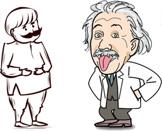
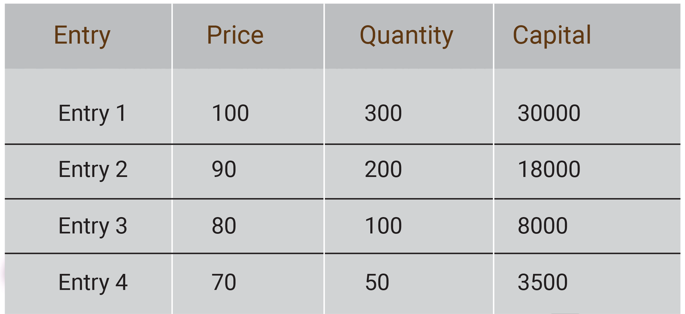
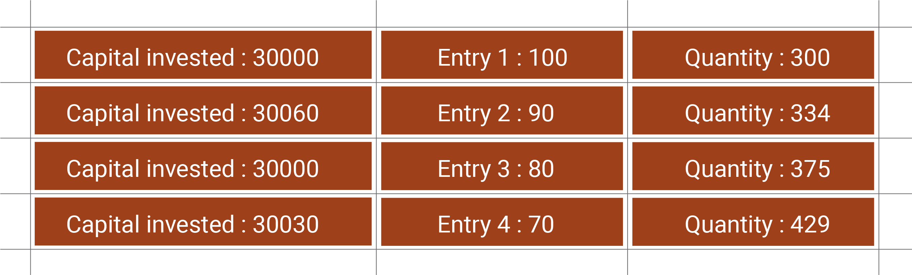
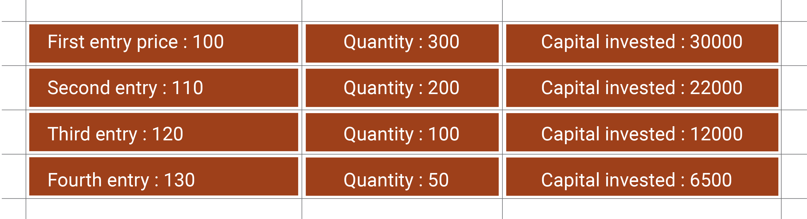
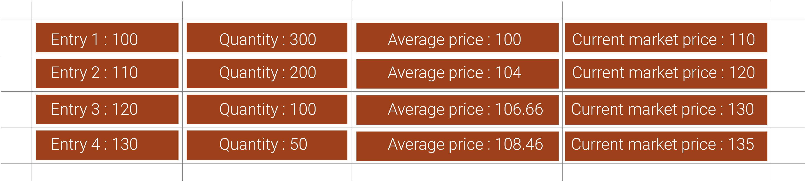

I am gonna tell you a short story. Are you ready?
It’s not a stock market related story. The story is not real, rather a self made, hypothetical one. It’s a story of an Indian who was flying with Einstein next to him. So the Indian guy sitting next to Einstein and Einstein says,
It’s not a stock market related story. The story is not real, rather a self made, hypothetical one. It’s a story of an Indian who was flying with Einstein next to him. So the Indian guy sitting next to Einstein and Einstein says,
Einstein: You know, it’s a long flight. Why don’t we have a competition?
Indian: What kind of competition, sir?
Einstein: I will ask you a question if you can’t answer it, you give me 5 dollars.
Then you can ask me a question and if I can’t answer I will pay you 500 dollars.
Indian : ( He thought about $5 vs $500, it’s a great deal ). Yes, sir, you can start first.
Einstein: How far is the moon from the earth?
Indian : ( Being in thought and thought ) You know, I don’t know the exact answer, and here are the 5 dollars.
Einstein: Now, it’s your turn.
Indian : ( He looked at Einstein and asked ) What goes up the hill with 3 legs and comes down with 4 legs?
Einstein : ( He worked through all of his knowledge of science and couldn't figure out what he was talking about ).
He put his hand in his pocket and gave him 500 dollars.
Indian: Now it’s your turn, sir.
Einstein: Before I ask you my next question, what goes up the hill with 3 legs and comes down with 4 legs?
Indian: Sir, here is the 5 dollars.
Einstein: Man, what is the answer?
Indian: Sir, I don’t know the answer. Now it's your turn.
Einstein : ( He thought for a while and said ) I have little work, let’s stop this game.
Indian: What kind of competition, sir?
Einstein: I will ask you a question if you can’t answer it, you give me 5 dollars.
Then you can ask me a question and if I can’t answer I will pay you 500 dollars.
Indian : ( He thought about $5 vs $500, it’s a great deal ). Yes, sir, you can start first.
Einstein: How far is the moon from the earth?
Indian : ( Being in thought and thought ) You know, I don’t know the exact answer, and here are the 5 dollars.
Einstein: Now, it’s your turn.
Indian : ( He looked at Einstein and asked ) What goes up the hill with 3 legs and comes down with 4 legs?
Einstein : ( He worked through all of his knowledge of science and couldn't figure out what he was talking about ).
He put his hand in his pocket and gave him 500 dollars.
Indian: Now it’s your turn, sir.
Einstein: Before I ask you my next question, what goes up the hill with 3 legs and comes down with 4 legs?
Indian: Sir, here is the 5 dollars.
Einstein: Man, what is the answer?
Indian: Sir, I don’t know the answer. Now it's your turn.
Einstein : ( He thought for a while and said ) I have little work, let’s stop this game.

Einstein had never expected that the Indian guy would think differently. Einstein noted down something on a piece of paper. Here is
what he took down in his paper.
This particular statement, “ The other way around “ has a great relevance in the stock market. Probably many investors are using this
logic while accumulating stocks.
“ What kind of logic are you talking about? “
“ The logic of thinking in the other way around, not by the traditional way “
“ Traditional way, what is it all about?
“ The traditional way is the concept of Averaging. “
“ How does averaging work?
“ The logic of thinking in the other way around, not by the traditional way “
“ Traditional way, what is it all about?
“ The traditional way is the concept of Averaging. “
“ How does averaging work?
Averaging or Averaging down
Averaging is one of the familiar ways in the stock market. It involves buying the same stock over and over again when the stock price
declines. People do average in 2 ways
For instance, you bought 300 stocks of RE Limited at the price of 100 rupees.
Later, the stock price had declined to 90 rupees and you have made a second entry in the same stock.
The question is,
“ Now, what would be your new average price? “
“Ohh, will the average price change in the future? “
“ Yes, “
“ Our old average price was 100 rupees, right? “
“ Yes. But what about now? “
“ The new average price would be 90. Am I right? “
“ No. If you make multiple entries in the same stock, the average price will change.”
“Ohh, will the average price change in the future? “
“ Yes, “
“ Our old average price was 100 rupees, right? “
“ Yes. But what about now? “
“ The new average price would be 90. Am I right? “
“ No. If you make multiple entries in the same stock, the average price will change.”
It’s very easy to find the new average price if you know the formula.
Average price = [ Total invested capital / Total quantity ]
Capital invested for the first entry was 30000 and the Capital invested for second entry was 18000.
Here, the total invested capital = 48000, [ 30000 + 18000 ].
Total quantity = 500, [ 300 + 200 ].
By applying the formula, the new average price = 96, [ 48000 / 500 ].
A couple of months later you have made 3rd and 4th entries again,
Here, the total invested capital = 48000, [ 30000 + 18000 ].
Total quantity = 500, [ 300 + 200 ].
By applying the formula, the new average price = 96, [ 48000 / 500 ].
A couple of months later you have made 3rd and 4th entries again,
What would be the new average price?

By applying the formula, New average price = 91.53 [ 59500 / 650 ].
“ When will I be profitable? ”
“ You will be profitable only when the stock price moves above the average price “
“ What about the current situation? “
“ Now the stock is trading at 70 rupees, lower than your average price “
“ How much money can I make for every 1 rupee movement? “
“ 650 rupees difference for every 1 rupee movement “
“ How come it’s 650 rupees ?“
“ Because you are holding 650 quantity “
“ You will be profitable only when the stock price moves above the average price “
“ What about the current situation? “
“ Now the stock is trading at 70 rupees, lower than your average price “
“ How much money can I make for every 1 rupee movement? “
“ 650 rupees difference for every 1 rupee movement “
“ How come it’s 650 rupees ?“
“ Because you are holding 650 quantity “
Positions click here
click here
click here
You are profitable only if the stock price moves above 91.53.
The way of buying a stock multiple times randomly when stock price declines is called the Random method of averaging. The advantage of doing an averaging concept is that when the stock price shoots up immediately above your average price then you will be in huge profit.
The way of buying a stock multiple times randomly when stock price declines is called the Random method of averaging. The advantage of doing an averaging concept is that when the stock price shoots up immediately above your average price then you will be in huge profit.
There are many possibilities that the stock price might fall down to Rs.60 or it might even reach Rs.40 also. To avoid such massive
unwanted situations in the stock, investors will find very strong support levels to do random averaging. Investors who are amateurs
will mostly follow a random averaging method when the stock price falls from 100 to the immediate next round figure like 90, 80, 70,
etc.
When you make your first entry at 100 rupees and you find the next immediate support at the price 84. In this case, 84 will be your second entry price. But there are situations when the stock price keeps declining and you cannot find the next immediate strong support to make your second entry. Then the recommended approach would be to do nothing. Don’t make the second entry.
When you make your first entry at 100 rupees and you find the next immediate support at the price 84. In this case, 84 will be your second entry price. But there are situations when the stock price keeps declining and you cannot find the next immediate strong support to make your second entry. Then the recommended approach would be to do nothing. Don’t make the second entry.
Do random averaging at the next immediate strong support, and not at the next round figure
“ The invested capital for our first entry was 30000, right? “
“ Yes, it was 30000. “
“ Why can’t we invest a fixed capital for 4 entries? “
“ An averaging concept of this kind is called a systematic averaging “
“ Yes, it was 30000. “
“ Why can’t we invest a fixed capital for 4 entries? “
“ An averaging concept of this kind is called a systematic averaging “
For the easiest of understanding systematic averaging, consider the stock price 90, 80, and 70 are the best support levels to make the
second, third, and fourth entries.

Average calculator click here
click here
Every time if you buy the stock with a fixed capital of around 30000 the quantity keeps rising from 300 to 334 and 375 to 429. In the
systematic averaging method, your average price has come down to 83.51, but in random averaging the average price was 91.52. But
there is a huge difference in invested capital and the quantity in both the methods. Here the invested capital for random averaging was
only 59,500. But the total invested capital for systematic averaging was 1.2 lakhs which is more than two times of 59500.
The good thing about systematic averaging is the average price, which is 83.51 and it needs around +14 points to make you profitable from the current trading price which is 70 rupees. The +14 points movement leads to a 20% rise in stock price from 70 to 84. Random averaging needs around 31% of the upside move to be profitable.
Random,
From 70 to 91.53, it needs +21.53 rupees movement to reach your average price and it’s around 31% move [ took a round figure ].
Systematic,
From 70 to 83.51, it needs +13.51 rupees movement to reach your average price, which is around 19% move [ took a round figure ].
The good thing about systematic averaging is the average price, which is 83.51 and it needs around +14 points to make you profitable from the current trading price which is 70 rupees. The +14 points movement leads to a 20% rise in stock price from 70 to 84. Random averaging needs around 31% of the upside move to be profitable.
Random,
From 70 to 91.53, it needs +21.53 rupees movement to reach your average price and it’s around 31% move [ took a round figure ].
Systematic,
From 70 to 83.51, it needs +13.51 rupees movement to reach your average price, which is around 19% move [ took a round figure ].
“ What matters, number of points or the percentage of movement? “
“ Percentage would be the best analysis in the stock market. “
“ Why can't it be a number?“
“ Percentage would be the best analysis in the stock market. “
“ Why can't it be a number?“
Consider 3 stocks trading at 2 digits, 3 digits, and 5 digits.
Every stock has moved +30 points up.
Stock_1 : 60 + 30 = 90
Stock_ 2 : 300 + 30 = 330
Stock_3 : 16000 + 30 = 16030
The +30 points movement has a huge impact in the first stock, very less in the second stock, and hardly no impact in the third stock. But if you look at the movement of any stock based on percentage, your entire perspective will change.
Every stock has +30 points movement and let's look at the movement based on percentage calculation and it goes like this,
Stock_1 : 60 + 30 = 90
Stock_ 2 : 300 + 30 = 330
Stock_3 : 16000 + 30 = 16030
The +30 points movement has a huge impact in the first stock, very less in the second stock, and hardly no impact in the third stock. But if you look at the movement of any stock based on percentage, your entire perspective will change.
Every stock has +30 points movement and let's look at the movement based on percentage calculation and it goes like this,
Likewise, stock 2 has a 10% movement and stock 3 has a very slight movement of just 0.18%.
Percentage calculator click here
click here
Percentage of movement does matter
Systematic averaging can be applied as a part of investing if you have a very strong bullish view in any stock. Some investors have a
strong conviction to hold some stocks for several years or sometimes they don’t sell the stocks forever. They will find few stocks,
mostly undervalued stocks which are trading at fair price to apply the concept of systematic averaging. They gradually accumulate the
stocks by buying the stocks at every fall expecting that the stock price will multiply and give returns several times. The recommended
approach for applying the systematic averaging would be your strong reason to hold the stock.
But the fun part is,
But the fun part is,
How many people can find good undervalued stocks with precise analysis?
What if the stock doesn’t perform but you keep investing in it?
How many of us do have enough patience to hold a stock for a lifetime?
What if the stock doesn’t perform but you keep investing in it?
How many of us do have enough patience to hold a stock for a lifetime?
It will make us thoughtful to answer the above questions. That's why good investors say,
Avoid doing averaging and follow the pyramiding concept
In averaging, we keep accumulating the stock when the stock declines the price and shows it's weakness. Pyramiding is all about
buying at strength. Pyramiding is an exact opposite process of averaging. Pyramiding is a good recommended approach for doing
investment. Here, you accumulate the stock only when it shows it’s strength.
This is how pyramiding works,
Say, you bought 300 stocks of RE Limited at the price of 100 rupees and the stock shows good strength and keeps moving upside from 100 to 110, 130, 150, etc. And you want to apply the pyramiding strategy, then you should accumulate the stock whenever the stock price rises above your average price. A typical pyramiding concept works like this,
This is how pyramiding works,
Say, you bought 300 stocks of RE Limited at the price of 100 rupees and the stock shows good strength and keeps moving upside from 100 to 110, 130, 150, etc. And you want to apply the pyramiding strategy, then you should accumulate the stock whenever the stock price rises above your average price. A typical pyramiding concept works like this,

You keep buying the stock when it shows good strength in the trend. Here, you have made the first entry at 100, the stock showed its
strength till 110 and accumulated a few more quantities of stocks at 110 again and continued the same process whenever the stock
showed its strength.
“ What will be the average price in pyramiding? “
“ Average price will increase for every new entry “
“ In that case, I prefer to do only averaging down the stocks? “
“ In that case, I prefer to do only averaging down the stocks? “
“ Why, averaging concept works only if the stock moves above the average price “
“ But the pyramiding concept will increase my average price, right? “
“ Yes, but the stock is at good strength and it keeps making new highs “
“ When will I be in profit if I do pyramiding? “
“ If the stock keeps showing good strength then you will be profitable in pyramiding.“
“ Average price will increase for every new entry “
“ In that case, I prefer to do only averaging down the stocks? “
“ In that case, I prefer to do only averaging down the stocks? “
“ Why, averaging concept works only if the stock moves above the average price “
“ But the pyramiding concept will increase my average price, right? “
“ Yes, but the stock is at good strength and it keeps making new highs “
“ When will I be in profit if I do pyramiding? “
“ If the stock keeps showing good strength then you will be profitable in pyramiding.“
We have made 4 entries at 100, 110, 120 and 130 in different quantities by pyramiding concept and the stock price keeps rising in your
favor,
The total invested capital: 70500.
The average price: 108.46 and
Total Quantity: 650.
Let’s dig into the deep of pyramiding,
The total invested capital: 70500.
The average price: 108.46 and
Total Quantity: 650.
Let’s dig into the deep of pyramiding,

Pyramiding click here
click here
Profit for the first entry was +3000 rupees when the stock price was trading at 110.
Profit increased to +8000 rupees after the second entry when the stock was trading at 120.
Profit further increased to +14004 rupees after the third entry when the stock was trading at 130.
You made a final profit of +17251 after the 4th entry when the stock price was trading at 135.
For every entry we make in the pyramiding concept, the stock price was trading above the average price which means you are always profitable. You will make a huge profit if the stock price rises enormously in your favor.
Profit increased to +8000 rupees after the second entry when the stock was trading at 120.
Profit further increased to +14004 rupees after the third entry when the stock was trading at 130.
You made a final profit of +17251 after the 4th entry when the stock price was trading at 135.
For every entry we make in the pyramiding concept, the stock price was trading above the average price which means you are always profitable. You will make a huge profit if the stock price rises enormously in your favor.
“ Is pyramiding the best for making quick profit? ”
“ Capital protection is first, then will think about making a profit “
“ Would pyramiding be the best capital protection method? “
“ Pyramiding is far better than averaging concept in terms of capital safety “
“ So let’s not follow the traditional averaging method. Right? “
“ Yes, it is better to think the other way around “
“ Capital protection is first, then will think about making a profit “
“ Would pyramiding be the best capital protection method? “
“ Pyramiding is far better than averaging concept in terms of capital safety “
“ So let’s not follow the traditional averaging method. Right? “
“ Yes, it is better to think the other way around “
It’s better to go slowly in the right direction than go speeding off in the opposite direction
The other way around click here
click here
FAQ
CMP refers to the current market price of a stock.
Averaging is not a recommended strategy and random averaging requires very little capital.
If you want to follow systematic averaging, you need more capital but your average price will be lower than the random averaging method.
Better buy at strength and follow the pyramiding concept.
There are chances the price may touch the immediate strong support levels and the trend may reverse and move in your direction.
If the trend has a good momentum it may break even soon and you will be profitable.
Every resistance level would be a good entry for pyramiding. If any stocks have to move upwards it should have strong breakouts.
Nearest immediate resistance would be a good entry in pyramiding if the stock is at good strength.
It’s up to you. It requires more capital first and the strong trend which you find should work in your favor.
Not a recommended method. Just follow one method which is suitable for you and easy to break even.
It’s not compulsory to do averaging if the price has come down. People do average with an expectation of immediate
shoot up in stock price and book the profit but actually they are buying at weakness. It is good to do nothing if the stock shows weakness.
Also you have to master your skill to find a good and strong trend in your next entry .
No. By default your trading account will show you the average price.